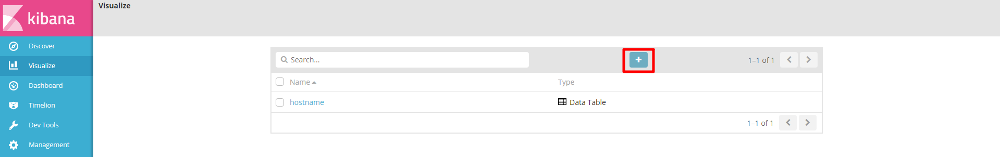
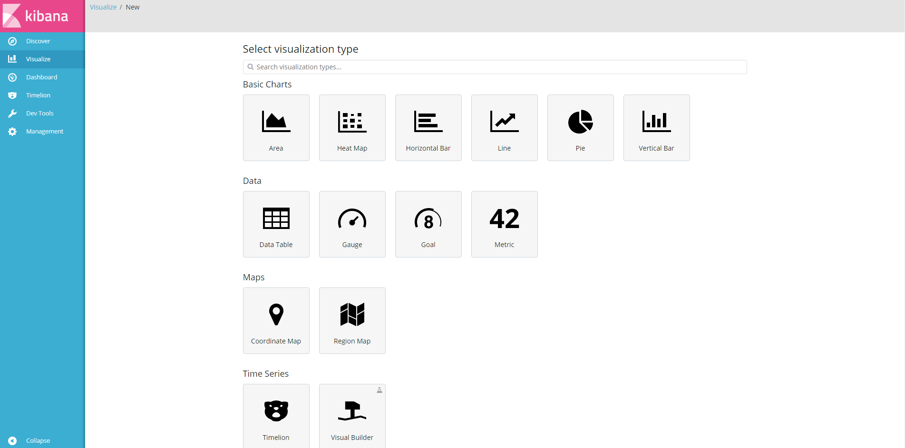
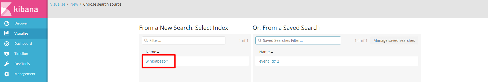
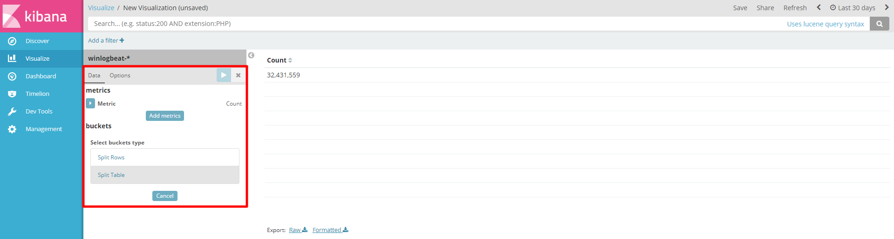
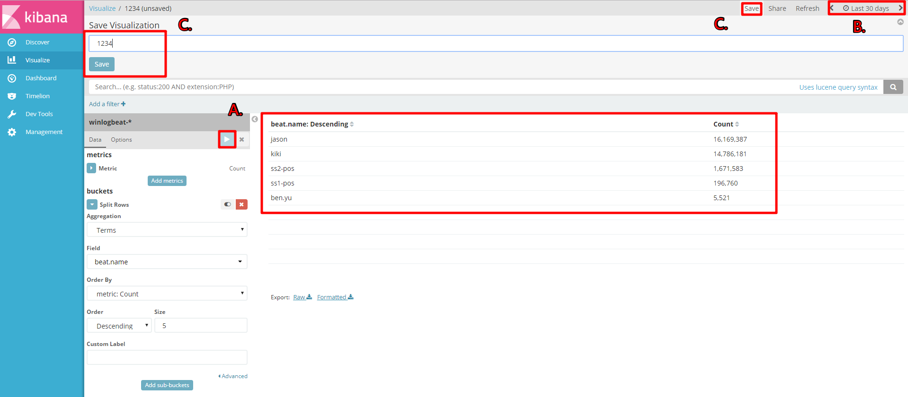
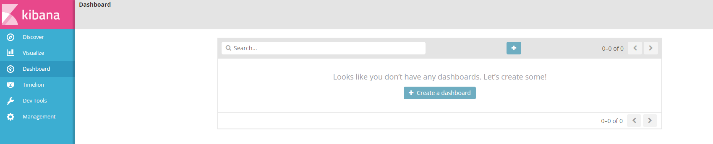
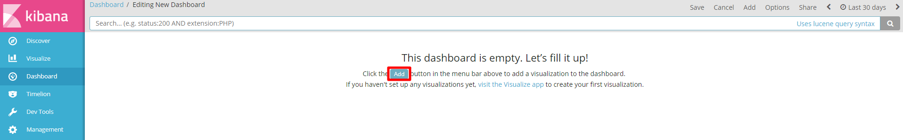
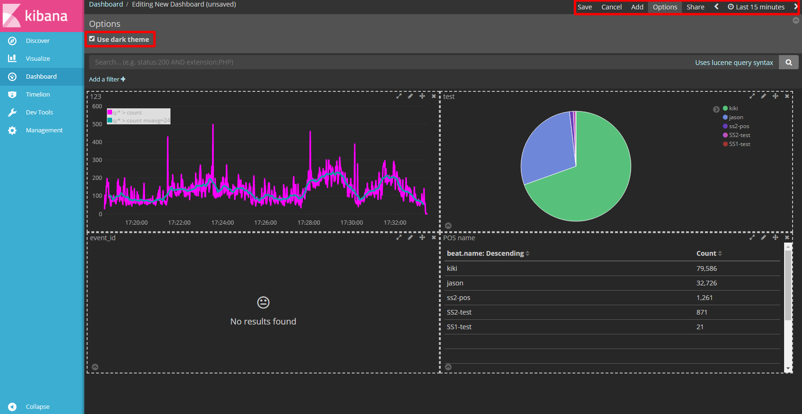
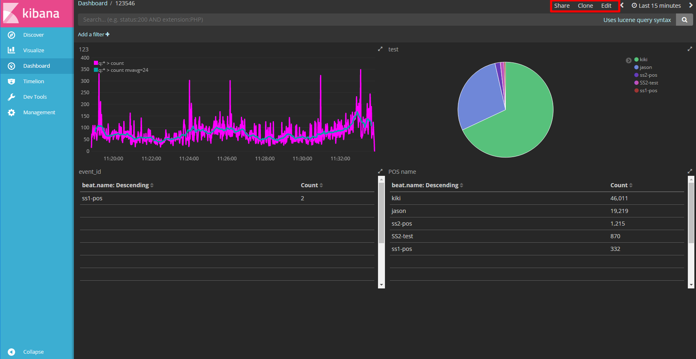
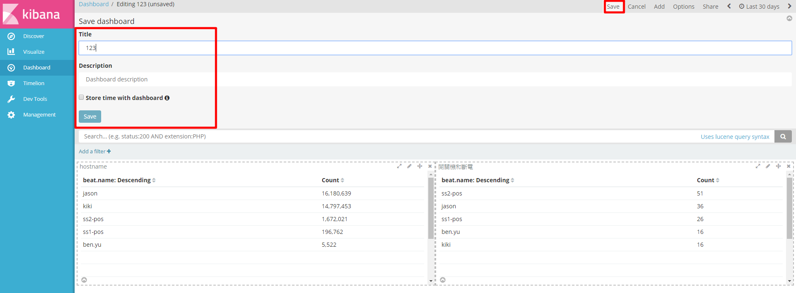

kibana 操作-Visualize、Dashboard、版本：5.6.7
Visualize : 將搜尋出的數據以長條圖、圓餅圖、表格等方式呈現
1. 點選 + 然後選擇想要新增的圖表


2. 選擇要圖表畫的 index

3. 設定參數

4. 儲存圖表
A. 點 圖表才會顯示你參數設定需要的 log
B. 有時侯設定好卻沒 log 出現，那是現在這個時間沒有此 log (預設是現在15分鐘)
C. 點擊 Save 頂部菜單中的選項，命名然後單擊 Save 保存

Dashboard : 將 Visualize 繪製的許多圖表，整合這些資訊到同一個頁面裡
1. 新增要整合的視覺化圖表


2. 選擇要加入的圖表，Options 可以更換背景顏色 Add 增加新表單

3. 儲存好要更改點選 Edit 可回復上一個圖在做設定

4. 點擊 Save 頂部菜單中的選項，命名您的面板，然後單擊 Save 以保存為儀表板可視化，也可以在此下條件觀
